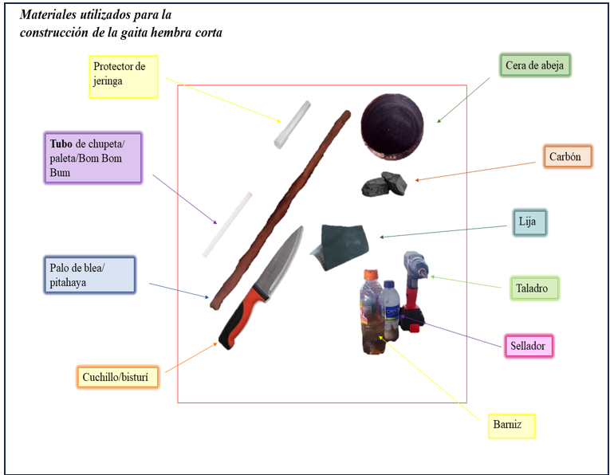

Momento 1
Este primer momento tiene como propósito conocer prácticas socioculturales propias del municipio de Pueblo Nuevo. Para este estudio, inicialmente se hace una prueba con la práctica de la elaboración de la gaita corta hembra, dónde se desarrolla una entrevista a una de las personas en el municipio que hace este instrumento musical.
En el proceso de la entrevista, se hacen preguntas asociadas a las herramientas que emplea esta persona para crear la gaita, las medidas que utiliza, los materiales entre otras preguntas. En paralelo, se recolecta esta información a partir de anotaciones y grabaciones de cada uno de los momentos, todo esto, con el propósito de no dejar escapar ninguna jerga, gesto o acción por parte del entrevistado.
ENTREVISTA: https://youtu.be/shcWRsyIpsU?si=GbJXegCARjVDX4zu
A continuación, se proporcionan los resultados y el análisis específicos de este momento:
 Figura 2 – Materiales y herramientas utilizadas por el señor BarneyFuente: elaboración propia, con el producto del análisis del trabajo de campo
La información recolectada en la entrevista permitió identificar una serie de técnicas utilizadas por el señor Barney (el entrevistado) para calcular la distancia a la que se encuentran cada uno de los orificios de la gaita y la longitud que debe tener el tubo melódico; con el apoyo de su material de trabajo (véase Figura 2). En la Figura 2 aparecerán los pasos para llevar a cabo la determinación de los orificios y su construcción.
Figura 3 – Proceso para medir la distancia y desarrollar los orificios de la Gaita Hembra CortaFuente: Elaboración propia, con el producto del análisis del trabajo de campo
La interpretación de este resultado muestra que en la práctica (émica) la ubicación de los seis orificios en la gaita aguarda una estrecha relación con medidas matemáticas convencionales similares a los centímetros y conceptos propios de la jerga como es la circunferencia y el diámetro. Esta se realiza utilizando medidas tradicionales basadas en la anchura de los dedos de la mano del artesano. El primer orificio se ubica a una distancia de cuatro dedos desde el extremo del tubo. El segundo orificio se sitúa a tres dedos más allá del primer orificio, el tercero se dispone a dos dedos del anterior y los restantes tres orificios se colocan a intervalos de dos dedos cada uno. Esta metodología crea una distribución de los orificios basada en una secuencia aritmética semi decreciente, donde la distancia entre cada par de orificios disminuye progresivamente para volver a ascender.
Las dos secuencias de pasos son anexos del proceso para crear la gaita. La Figura 4 demuestra lo mencionado anteriormente.
Figura 4 – Proceso para la construcción de la Gaita Hembra CortaFuente: Elaboración propia, con el producto del análisis del trabajo de campo
En medio de este proceso se evidenció que, en el paso 3 se emplea una técnica de medición tradicional basada en la longitud de la mano, conocida como "cuarta", que se relaciona naturalmente con la Etnomatemáticas y la ejecución de procesos matemáticos claves. El Señor Barney utiliza esta unidad de medida para determinar la longitud adecuada del tubo cilíndrico que se empleará en la construcción de la Gaita Hembra Corta. La medida específica utilizada es de casi dos cuartas, con un dedo adicional extendido, lo que equivale aproximadamente a 35 centímetros. Matemáticamente, este procedimiento implica una conversión de unidades tradicionales a unidades estándar que relaciona el ancho de ambas manos extendidas con la distancia que existe desde el dedo pulgar hasta el meñique. La relación establecida es que 2 cuartas menos la longitud de un dedo corresponde a 35 cm. Esta conversión permite estandarizar la medida y facilita la reproducibilidad del proceso.